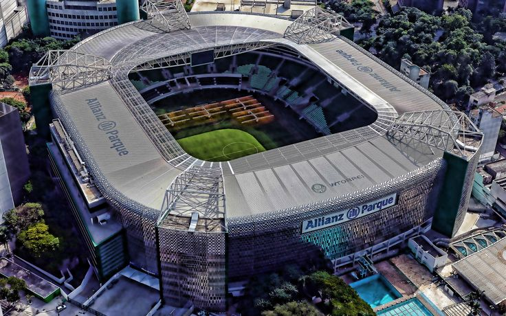

Allianz Parque
Allianz Parque,conhecido popularmente em seus primórdios como Arena Palestra Itália ou Arena Palmeiras,é uma arena multiuso construída para receber espetáculos, concertos, eventos corporativos e, principalmente, partidas de futebol do Palmeiras, seu proprietário,que fez um contrato de construção, exploração e gestão inovador com a WTorre para renovar completamente seu antigo estádio. A nova arena foi construída pela empresa WTorre Properties/Arenas, do Grupo WTorre, onde se localizava o tradicional Estádio Palestra Itália, também conhecido popularmente como Parque Antarctica..
